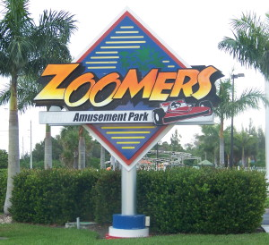
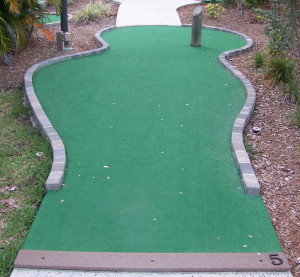

| N:
Zoomers Amusement Park 17455 Summerlin, Ft. Myers
(south side of Summerlin)
(239) 481-9666, web site
 | 
| Price: $7.50 Number of Courses: 1 Upkeep: C Originality: D Hole-in-One Difficulty: Medium Par Difficulty: ??? Music: Grating Bird Noises
This is one of the worst courses I have ever played. Unknowledgeable staff, soggy scorecards, dying plants, poor upkeep, no originality. There are no pars. That's right, because victory comes from doing your best. There is also a 5-stroke maximum, which is absurd when there is a hole with three layers, each leading to the next. They also have go-karts, an arcade, and of all things a roller coaster, so the mini-golf was clearly an afterthought, and you should save your money. |